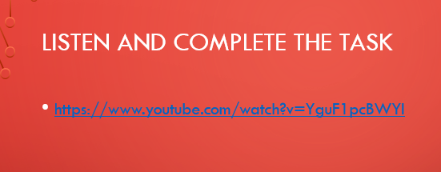
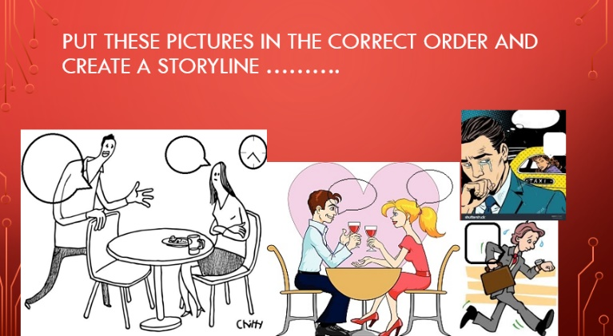
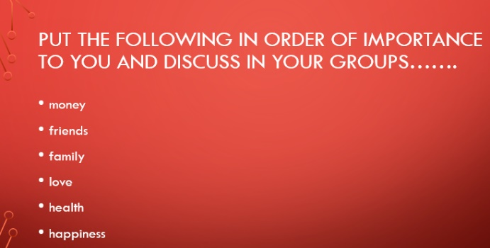
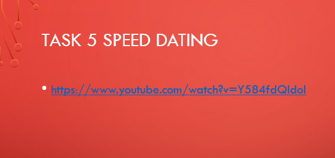
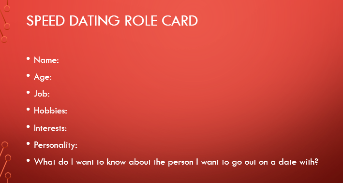
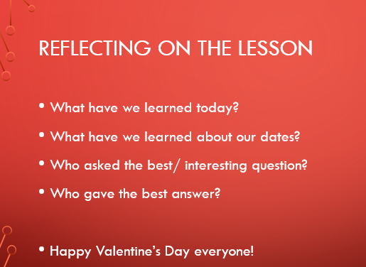
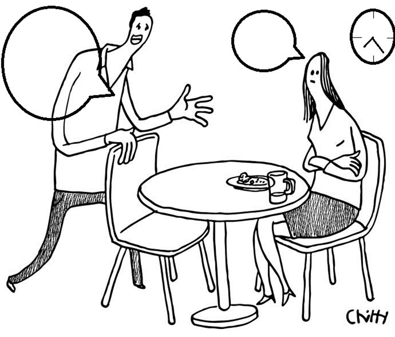

Abstract
A teaching portfolio built around a 90-minute Valentine's Day lesson for B2 learners - the rationale behind each stage, the full lesson plan, PowerPoint slides and two peer-teaching self-reflections.
This portfolio contains a rationale of a 90-minute lesson plan which is written for a specific group of learners from Education First (EF) language school. My students are here for nine months and are B2 level learners.
The majority of day to day interaction is to be able to communicate what you are thinking from one person to another. Therefore, I believe that helping students to build confidence in their ability to communicate verbally is a useful activity. I chose dating as the topic because the lesson will be delivered close to Valentine’s day and there will be a speed dating session in the activities room on Valentine’s day. Discussing and practicing speed dating will give the students confidence to produce language and create fluency in their speech.
This lesson is based on the ideas of Bertrand (2016), Harmer (2007a), Harmer (2015) and Updike (2015), but it is heavily customised for my audience.
The main priority before designing a lesson is to know your students, and their level of English, that way the students can be challenged on their level, and find the right balance between all skills (i.e. reading, writing, listening, and speaking). This lesson is an opportunity to extend their vocabulary and grammar in an area they can actually use outside the classroom. It will provide an opportunity for the students to ask and respond to questions efficiently and rapidly. Levels of interest in this topic will naturally differ, but if the tasks are sufficiently challenging, any topic can engender enthusiasm when explored from a different angle (Willis and Willis, 2007). Creating a custom lesson plan shows students that you care enough to put effort into their learning. It also helps keep them interested because the lesson is topical and not simply repeated from the textbook. The purpose and focus of the lesson will be speaking, in an informal setting, to a stranger. During the course of the lesson we will cover; the past simple and past continuous, the present perfect and present perfect continuous, and the future continuous and future perfect tenses. A key goal of the lesson is to activate language that the students already know, encourage their speaking and verbal confidence all without them really knowing that they are learning.
Ensuring the classroom is properly set up and working prior to the students entering is extremely important. The list of the things I believe could go wrong, and my strategy to minimise that risk is available in the lesson plan. The students will be arranged by table. Each table will be a separate group. As they enter the room they will pick a random card with a symbol from a basket. They will then sit at the corresponding table. Scrivener (2005) argues that it can be useful to establish this kind of seating routine because students respond and learn better when they sit in a place which maximizes their concentration, this helps them mentally transition from the outside world to the classroom.
Every good lesson plan should introduce the concept which is the focus of the lesson in the lead-in (Scrivener, 2005). The first PowerPoint slide helps the students draw meaning from the context, this inductive approach gives new possible ways of presenting new language (Harmer, 2007b). The date will start the conversation and allow me to elicit their vocabulary level. We will then play a word relation game: The students must stand and say a word in English, relating to Valentine’s day. If they re-use a word, they are disqualified from the game. The last student standing is the winner.
Harmer (2007a) illustrates that any learner can reach their communicative goal by accurate language practice and that real-life experiences create fluency in speech. Therefore, the students, within their groups will be instructed to discuss their likes and dislikes about Valentine’s day. Opposing and contrasting viewpoints will naturally emerge and generate conversation between the students. This practice will build confidence and utilise different tenses as they discuss. While the students talk to each other, I will monitor and talk to them as well to get more information out of each group. After two minutes, I will ask one student from each group to present their group’s likes and dislikes about Valentine’s day. This technique will improve their public speaking confidence, prove their listening and comprehension skills, and encourage interaction from other students if the story or claim is incorrect (Harmer, 2007a).
After the lead-in, the next stage of the lesson is the listening task. The listening task provides the learners with listening practise and recognising vocabulary, as listening is interactive. To help the students, I will pre-teach some of the vocabulary within the context of the video (e.g. annually, negative aspects, etc.). This is important so that students feel adequately challenged but not overwhelmed by the video, to generate interest and encourage students to predict context before listening. If learners encounter something too difficult they may feel frustrated, demotivated and even anxious (Harmer, 2007a). I have selected this video, because it provides the history of Valentine’s Day, and only the first two minutes of the video will be shown to the students, because that provides the information needed.
The students will receive strips of paper with known and unknown words (see appendix 1). They will be asked to put the words in the correct order during this video. The contextual clues give purpose to help them make links between the spoken message and prior (schematic) knowledge, this is known as top-down processing (Scrivener, 2005). Following the video, the groups will be given one minute to agree or disagree on the order of the words. I will then post-teach some of the words in the video. Post-teaching is designed to make the students aware of the language they have not noticed by using the meaning and spelling of the new vocabulary, and clarify the pronunciation by drilling. Drills are commonly done chorally and take the form of simple repetition of new vocabulary to focus on phonological structures (Brown, 2007). After the drill, the students will listen again and have the opportunity to correct themselves by hearing the vocabulary once more. Repetition of the audio gives the students a chance to listen for a more detailed understanding of the exercise (Harmer, 2007b).
To make a transition from an inactive to an active stage, I present the fourth PowerPoint slide and ask the students to put in order what is important to them. These are all interesting topics which can be used to talk about during a first date. Students will have to think of relevant questions for a first date, and have to brainstorm of possible jobs, hobbies, interests and personality types. This task is to practice and build confidence for the final task. After setting up the task, I will quietly go around the room checking that all the students understand the task and are doing it. If a couple of students do not seem to understand what they should be doing, I can help them individually or ask a student that speaks the L1 to help the student. If there are more, it means going over the explanation with the whole class again. Considering that the instructions were not understood the first time, it is of importance to do a full demonstration of the task (Harmer, 2015). While monitoring the groups, I will pay attention to the language they use inaccurately to help them improve by only correcting errors that are relevant, because correcting errors above students’ level would be unnecessary and could cause embarrassment.
The students will watch the video on speed dating to see the set-up, the type of questions, and the thought process. The main purpose for the students is to see the social setting and understand the next task, this is more important for the students than to make them aware of the tenses, because concentration on grammatical competence will not provide the learner with the ability to interpret or produce the language fluently (Yule, 2010). Speaking is an activity that students use for interpersonal purposes, which is primarily social in this context (Saville-Troike, 2012). After watching the video, I will emphasise that they only have 3 minutes per date, so their ability to convey interest in the other party and prioritise their questions (if they have things in common, then re-enforce the shared interest by repeating them, e.g. the same films, music, travel, etc.).
The students get to practise their questions within their groups and make adjustments to their questions by peer-checking, and I will monitor to make sure everyone is on the same page. I will give them some examples to make sure there are a few unusual questions to make for some comical encounters (e.g. what was the biggest mistake you have ever made in class when you first started learning English? If you could go on a date with anyone in the world, who would that be? etc.).
The students receive an empty role card (PowerPoint six) they have to create a character without gender so that everyone can play at the same time. This is deliberate as there are more boys than girls in this class and will also prevent any possible embarrassment or upset anyone relating to gender, sexuality or existing relationships within the class. The reason I do not want to give them premade characters is because it is better to be someone you want to be rather than being forced into a character you do not want to be. This free choice will provide the opportunity to explore the role in a more spontaneous manner (Ladousse, 1991). This task is a freer practice task and is reflective of real-world language use and includes conversation, asking questions, telling stories, etc. It is important that the context in the task encourages use of the vocabulary and grammar gained from the previous tasks.
Speed-dating is a repetitive task which gives students the opportunity to hear different accents, encounter different vocabulary and speak to new people. This practice is essential, as communicating relies less on complete knowledge of all grammar rules and more on maintaining fluency during communication. Speed-dating, does all face-to-face interpersonal interaction and relies on reciprocal communication. Reciprocal communication forces the student to listen before answering, engage in collaboration and interpretation in order to understand the meaning (Saville-Troike, 2012).
Every 3 minutes an alarm will sound and the inner circle will rotate. I will take notes of errors as well as correct language use since over-correction during the task could cause the students not to speak at all. Thus, the students can focus on their communication and are more likely to be successful.
When the activity is completed I will give examples of errors and correct language use by writing them down on the board. The overall aim of language is communication, by complementing on their language use shows the lesson had a valuable outcome and that their communication was successful. This is important as it will provide correction and have a positive impact on the students. The final PowerPoint slide gives the students the opportunity to praise each other’s language use and reflect on what they have learned during the lesson.
The aim of this lesson is to improve student’s verbal communication skills in an informal and fun environment. I faced several challenges while planning this lesson and had to think of practical and realistic ways to overcome them. One such example would be keeping the students interested. Varying activities does not just mean dropping one and picking up another, it is to keep the attention of the students by having a mix of activities that develop the language throughout the lesson without them knowing. Some challenges were fairly straightforward: varying class size – simply make the group tasks appropriate for different group size (see lesson plan). There were other potential issues that may not appear in this particular lesson but could in other lessons (e.g. mixed levels of students).
What appeals to me about this lesson is that it makes the students think about what they normally would do when they meet someone, things that would appear naturally in their L1. This lesson provides to practice that in English and build confidence throughout the lesson. The speed-dating gives new opportunities every three minutes to correct themselves, establish confidence to produce language by repetition and create fluency in their speech.
| Name teacher: Sermin Erden; Institution : EF Language School; Class: TK2B; Time: 90 minutes; Timetable of this class: 4 hours a day; Course: Intensive; Length of Course: 9 months; Educational level of students: College and University students; Occupations: Student; Attitudes: extrinsic and intrinsic students; Interests: Music, Film, Trips within the UK or Europe, and future education. | Number of Students: 14; Gender: 8 males and 6 females; Age range: 19-25; Proficiency Level: B2 upper intermediate; First Language: Spanish, Italian and German; Nationalities: Mexico, Colombia, Venezuela, Chile, Ecuador, Argentina, Uruguay, Italy and Switzerland.; Reason for studying English: They are learning English for Academic Purposes (EAP); Previous Language Learning Experience: Learning English as a foreign language in land of origin. |
|---|
Title: Valentine’s Day
Topic: Dating
In the previous lesson, the SS have practiced tenses.
| Time | Stage | Procedure; (Activity) | Aim (Teacher purpose) | Interaction |
|---|---|---|---|---|
| 10 min. | Lead in/Pre-teach Task1 / Lexis | To get students thinking about the topic of Valentine's Day, the first PowerPoint slide will be on when they enter the classroom. Elicit what they know. Check SS vocabulary; by playing word relation game (elicit: how often this day is celebrated, which countries celebrate this day or another day with romantic elements, negative aspects, what do people do, history, personal experiences, likes and dislikes about the day.; Check pronunciation & understanding and drill any problem words (e.g. annually). | Engage students. Elicit SS knowledge about Valentine’s Day. | T ↔ SS; S ↔ S; S ↔ S; ↕ ↕; S ↔ S; T ↔ SS |
| 10 min | Listening/ Task 2 | Group receive strips of paper with known and unknown words. Check understanding of the task. While students watch the video https://www.youtube.com/watch?v=YguF1pcBWYI; they place the strips in the right order. Check answers per group. Teach the following words: pagan, feasting, mating period. Illustrate meaning, elicit, ask check questions, drill and re-elicit and write on the board. Play video again for the SS to correct their mistakes. | Set a gist task. Monitoring.; Checking knowledge of vocabulary and drill new vocabulary.; Check understanding.; Monitoring groups.; Post-teach | T ↔ SS; S ↔ S; ↕ ↕; S ↔ S; S ↔ S; ↕ ↕; S ↔ S |
| 10 min | Task 3/ Less restricted practice using target language | SS are shown pictures of two people meeting for a date (PP slide 3). SS will be asked to describe what they see. After handing out the pictures on one piece of paper the SS have to put the pictures in the correct order and create a storyline between the two characters and fill in the clouds in their groups. Check understanding. Check if everyone has completed their task. After finishing the task, the SS will tell their storylines per group. Then I will show them the original story. | Set detailed task.; Monitor groups.; Check answers | T ↔ SS; S ↔ S; ↕ ↕; S ↔ S; T → SS |
| 10 mi; n. | Target Language/ Task 4/ Less restricted written practice; to provide a written record of the target language | PowerPoint slide 4: SS put the words in order of importance to them and discuss within their groups why it matters to them. How would they ask someone about these topics on a first date? What kind of questions would they ask on a first date? How would they answer those questions themselves? Students will have to think of relevant questions for a first date, and have to brainstorm of possible jobs, hobbies, interests and personality types. This task is to practice and build confidence for the final task. | Monitor groups.; Correct errors if necessary | T → SS; S ↔ S; ↕ ↕; S ↔ S |
| 10 min. | Using Target Language/ Task 6 / Speed-dating | The students will watch the video on speed dating to see the set-up, the type of questions, and the thought process. The main purpose for the students is to see the social setting and understand the next task. https://www.youtube.com/watch?v=Y584fdQldoI; Play the video again, emphasise that they only have 3 minutes per date, so their ability to convey interest in the other party and prioritise their questions (if they have things in common, then re-enforce the shared interest by repeating them, e.g. the same films, music, travel, etc.).; The students practise their questions within their groups and make adjustments to their questions by peer-checking. | Check understanding.; Monitor | T ↔ SS; S ↔ S; ↕ ↕; S ↔ S; S ↔ S |
| 30 min. | Task 6/ Produce/; Freer/ Authentic practice to give students authentic practice in using target language | SS receive a role card (PP slide 6) and invent a character, they get 2 min. Instruct students the rules of the game. The role-cards will be numbered, the uneven numbers will stand in a circle facing everyone in the circle, and the even numbers will stand in the circle facing the student with an uneven number. In case of an uneven number of students, I will make two students that have an uneven number stand together and the conversation will take place in a set of three Check understanding. SS start the game by standing in a circle as instructed. Every 3 min. students rotate and ask questions/ receive answers from each other. The game ends when students stand in front of the first person they have spoken to. While students play the game, I observe and note down errors and correct language use. | Instruct SS, check understanding (who sits/ who rotates), set a clock for every 3 minutes, monitor the dates. Note down errors | T SS; S ↔ S; ↕ ↕; S ↔ S |
| 10 min. | Closure | At the end discuss errors and correct language use, and ask: What have we learned today? What have we learned about our dates? Who asked the best/ interesting question? Who gave the best answer?! | Clear ending to the lesson | T ↔ SS |






Bertrand, J. (2016) 'Valentine’s day', available at https://www.teachingenglish.org.uk/article/valentines-day, accessed 2 January 2017.
Brown, D. (2007) Teaching by principles: An interactive approach to language Pedagogy (3rd edition), New York: Pearson Education.
Gardner, H. (2011) Frames of mind: The theory of multiple intelligences (3rd edition), New York: Basic Books.
Gardner, H. E. (2000) Intelligence reframed: Multiple intelligences for the 21st century, New York: Basic Books.
Harmer, J. (2007a) The practice of English language teaching with DVD (4th edition) (Longman handbooks for language teachers) (4th edition), Harlow: Pearson Longman ELT.
Harmer, J. (2007b) How to teach English book and DVD pack, Harlow: Pearson Longman.
Harmer, J. (2015) The practice of English language teaching, Harlow: Pearson Longman
Ladousse, G. P. (1991) Role play, Oxford: Oxford University Press.
Saville-Troike, M. (2012) Introducing Second language acquisition. Muriel Saville-Troike (2nd edition), Cambridge: Cambridge University Press.
Scrivener, J. (2005) Learning teaching: A guidebook for English language teachers (2nd edition), Oxford: Macmillan Education.
Updike, J. (2015) 'Teaching English- lesson plan: History of Valentine’s day', available at http://englishlessonplan.co.uk/teaching-english-lesson-plan-history-of-valentines-day/, accessed 2 January 2017.
Willis, D. and Willis, J. (2007) Doing task-based teaching: A practical guide to task-based teaching for ELT training courses and practising teachers, Oxford: Oxford University Press.
Yule, G. (2010) The study of language (3rd edition), Cambridge: Cambridge University Press.
| Annually | Negative Aspects | Feast |
|---|---|---|
| Convenient | Conducting | Execution |
| Particular | Pagan | Sacrifice |

Ahead of their time (reading-task) Tuesday 1st of November 2016
To give the students a great performance – Sharon and I – practiced several times to different scenario’s, just to be prepared in case of no interaction from our classmates. Before we started our lesson, I was concerned about the time, because we presented last and the other groups didn’t leave us much time. As soon as we started, I had forgotten all about it, including everything we had practiced before. Since the class was already in a positive vibe due to the other lessons, I followed my instincts and responded to their feedback, rather than a script I had in my mind. Sharon and I both ensured everything that needed to be done was covered as a team.
Strengths and Weaknesses of the lesson/ what I learned and what can be improved: At the beginning of our lesson, we were trying to elicit basic knowledge about the inventors in the text by showing their pictures and names on the screen. I could feel that students thought they were being tested. Although, their answers were correct, there was hesitation in their voices as they were answering in question form and keeping their voices low, which caused the other students not to hear their answers. I didn’t ask the student directly to repeat what was said (I didn’t want to student to feel she was put om the spot). Instead, I let the student know that the other students couldn’t hear, since they were far away. Because of that, the student repeated the answer with volume, so the others could hear. It would have been better to ask them to chat to each other fist and give them time to think about the question, before we asked them to share the information with us. The difference was noticeable when we asked them to scan the text to find additional information about the inventor and discus the new information within their groups, their answers were endless and everyone in class responded.
Methods and Materials: What made this lesson a success was the way we used the text in form of a Jig-Saw Puzzle, every group had to read about a different inventor and then sit in different groups. This way the students were “forced” to interact with each other in order to find the right answers. I saw that one person in one of the groups left the classroom before sharing any information, I remembered the initial group set-up and saw that another group had 2 students with the same information, so I asked one of them to join the other group to complete the task.
Goals were achieved: After explaining the rules of the game (and that there was prize at the end), we could actually feel their excitement to play the game. Due to time, we couldn’t go through all the questions, but we still had a winner. This lesson was successful because we showed that Howard Gardner's theory of stimulating multiple intelligences works. We haven’t covered all areas (musical-rhythmic and naturalistic), but we did stimulate their visual (our explanation of the lesson and the PowerPoint), verbal (communicative abilities of sharing information, reading and writing), logical (work out the answers by completing the puzzle), bodily-kinetics (running to the board to write the answers), interpersonal(using a reward as motivation to cooperate in order to work as part of a group), and intrapersonal abilities(using self-reflective capacities by external observation).
Murder Mystery (speaking-task) Tuesday 29st of November 2016
Methods and Materials: Two years ago, my tutor in the Netherlands introduced this game in three versions. She changed the crime scene to be at the University and the characters were University staff and all extras were students. As we were a big group, everyone received one clue which included a character, and the game was played individually. Another version she mentioned in case the class would be smaller, is to make students work in groups and act out the characters in form of a jig-saw puzzle. When I read the game for this lesson, it immediately reminded me of that game and we decided to change the rules to make the lesson more interactive. We knew that most of the students would come into class as we needed a minimum of 12 students to make this game a success. Having 20 clues meant it would be easier to have 4 groups, as we have 4 characters, and we could hand out 5 clues per group. We went through the characters and clues, then selected certain details to put in certain groups to make their characters more appealing and give them certain information about other characters (e.g. Mrs. Crabtree got the clues about Daniel having debts and that her husband has him in his will). As we saw ‘Elementary’ as the heading, we assumed that this was a test to figure out which level that was and what the aims are at that level. Elementary is A2 level and students learn past tenses at that level, which complements the game.
Strengths and Weaknesses of the lesson: At the beginning of our lesson, we presented a picture of the game Cluedo to activate schema and interest. Unfortunately, we didn’t spent so much time on the presentation stage of the lesson, because we didn’t want to rush through the other activities, like we did last time. We elicited their knowledge about the game and about which tense they would use during this game. We checked understanding by giving an example of how to ask a question in past tense and how to answer in past tense compared to present tense. The students received the case study, a post-it with their character name and the clues for their groups. At that stage, we wanted to know who they thought the murderer was just by the limited clues they had per group. The reason behind it is a bit of practice before starting the real game and to show them that they really have different clues, as every group suspected a different character because of that. I also reminded them of the game we played in our first lesson and the importance of sharing the right information to get to the right answer. As we had 11 students, I joined the Mr./Mrs. Fairfax group while Sharon monitored the other groups. The laughter and interactions humanized what had started out to be a controlled lesson. I could actually sense that the students were involved and that we were responsible for that engagement.
Goals were achieved: Overall, the lesson went really well. The students were using past tenses and asking the right questions, because of that they were able to find out who the real murderer was at the end.
What I learned and what can be improved: that we need more time to play a game like this, because the students were feeling rushed even if they found out who the murderer was. We are able to teach what we learn in class to a certain extent, due to limited time and the amount of information that we have to provide to the class in our mini-lessons (they are not in balance). In a class with foreign students I would start with specific information, explain the game in more detail, and give them the time they need to gather information. We also understood the importance of being flexible and that changes may be necessary in order to make it work in a classroom. After the lesson, we also learned that ‘Elementary, dear Mr. Watson’ was the name of the game and the instructions was a small printed text on studentcentral, which we didn’t see. We now know what it means and that we have to ask when the details for the lesson aren’t clear.